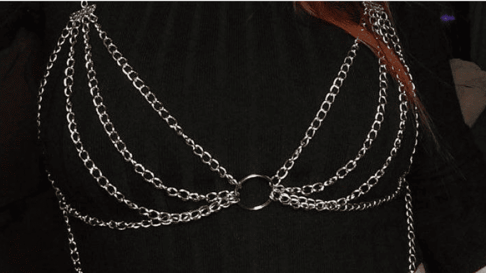
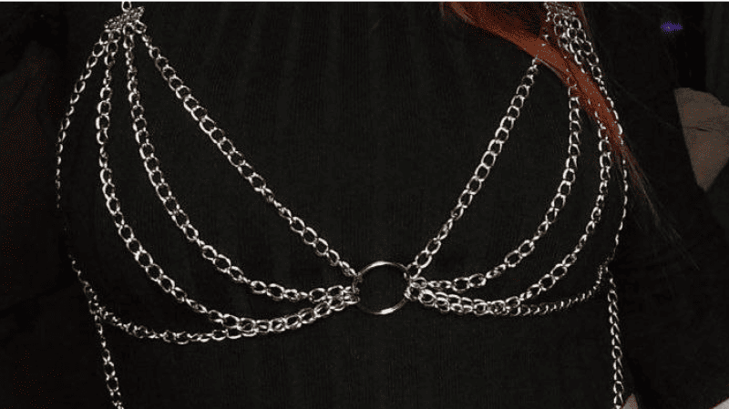

Всё началось с танцев. Мне нужно было особенное украшение, за счёт которого моя хореография могла бы стать более индивидуальной. Первым моим украшением стала маска из цепей, которую я сделала для особенного танца.
Благодаря танцам у меня возникали новые идеи для создания украшений. В результате появились портупея из цепочек, кроп-топ и платье Black Widow из цепей, комплект в золотом цвете для съёмок.
Однажды в поиске идеи для костюма, просматривая Pinterest, я увидела плетения из колец и решила, что хочу попробовать это метод. Сначала объединила камни и цепочки, в то же время предложила их бару "Раскол". Владельцу бара они понравились. Это было пространство, где можно было увидеть и приобрести мои украшения. Первая партия изделий была с одинаковым плетением, но разными камнями. Для разнообразия я начала экспериментировать с дизайном, сочетаниями, размером. На заказ от гостей бара начала делать браслеты. Затем через пару месяцев сделала серьги.
Мои украшения оживляют образы, и при правильном использовании выглядят не менее респектабельно, чем ювелирные изделия. Символы и значение украшений очень многообразны: с их помощью можно передать не только собственное мировоззрение в принципе, но и просто сегодняшнее настроение. В добавок это способ недорого и интересно украсить простой образ.
В процессе создания украшений, я получаю массу эстетического удовольствия. Надеюсь, что гости моей страницы вдохновятся уникальностью и найдут свое украшение среди моих изделий.
 
